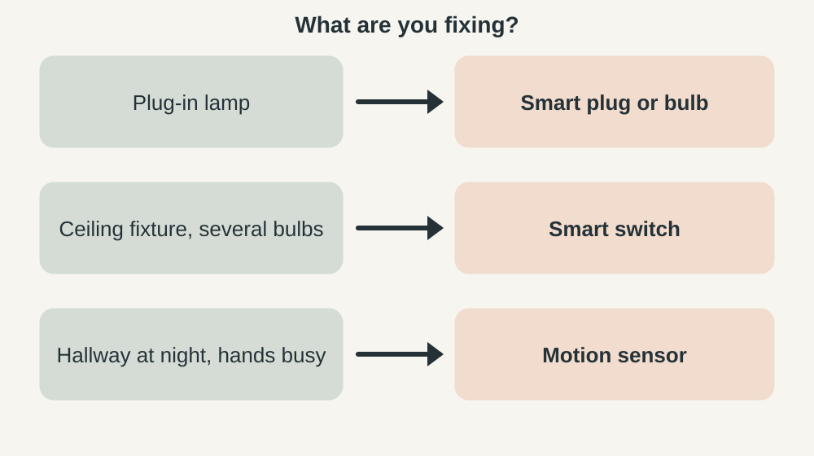
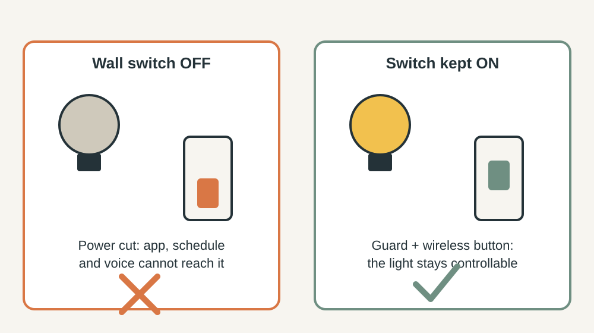

SMART HOME · PRACTICAL GUIDE
Smart lighting without turning your home into a gadget showroom
Most smart-lighting regret comes from one choice: the wrong kind of device in the wrong place. This guide helps you pick between a smart bulb, a smart switch and a smart plug for each light, keep a manual switch that always works, and check the hidden standby cost before you buy.
Short answer: use smart bulbs for lamps, a smart switch for ceiling lights and fixtures with several bulbs, and a smart plug for plug-in lamps. Always keep a way to turn the light on without the app, and test it once with the internet off.

1. Start with one annoyance, then pick the device
Write down one repeated annoyance in one room: the hallway you cross in the dark, the lamp you forget to turn off, the living room that is too bright at night. The annoyance decides the device, not the other way round.
| Your annoyance | Best fit | Why |
|---|---|---|
| A floor or table lamp you forget to switch off | Smart plug or smart bulb | No wiring. Works in a rented home. |
| A ceiling fixture with 3 to 6 bulbs | Smart switch | One device instead of six bulbs. The wall switch keeps working. |
| Warmer, dimmer light in the evening | Smart bulb in the lamp you use at night | Dimming and colour temperature live in the bulb. |
| A hallway light at night | Motion sensor, see our motion lighting guide | Sensors beat apps for hands-busy moments. |

2. Bulb, switch or plug: what each one really does
| Smart bulb | Smart switch | Smart plug | |
|---|---|---|---|
| Controls | One bulb | Everything on that circuit | One plug-in lamp |
| Wall switch off | Bulb loses power and cannot be reached | Still works, and the switch stays smart | Not applicable |
| Wiring | None | Replaces the wall switch, so mains work | None |
| Standby draw | One per bulb | One per switch | One per plug |
| Best for | Lamps, colour and dimming | Ceiling lights, multi-bulb fixtures | Lamps, holiday lights |
The counting matters. A fixture with five bulbs needs five smart bulbs but only one smart switch, which also means one standby draw instead of five.
3. Check the standby cost before you buy
Smart devices keep a radio awake so they can hear a command, which means they draw a little power even when the light is off. Research on smart lamps calls this network standby, and IEA 4E notes that smart lamps need power for standby and gateways. ENERGY STAR says certified smart lighting uses less energy both when on and in standby.
The formula: standby watts × 24 × 365 ÷ 1,000 = kWh per year. Take an example of 0.5 W per bulb: 0.5 × 8,760 ÷ 1,000 = about 4.4 kWh a year per bulb, or about 44 kWh for ten bulbs. Multiply by your electricity rate to see the cost. Find the real figure on the spec sheet under "standby power" or "networked standby" and compare it before you buy.
The lesson is not that smart lighting is wasteful. It is that a smart bulb in a closet you open twice a week costs more in standby than it can ever save. Keep them for lights you actually automate. For the basics of efficient bulbs, see the U.S. Department of Energy's lighting guidance.
4. Keep the wall switch alive
This is the most common smart-bulb failure. Someone flips the wall switch, the bulb loses power, and the app, the schedule and the voice command all stop working.

- Switch guard: a small plastic cover that keeps the wall switch in the on position when a smart bulb sits behind it.
- Wireless button or remote: stick one beside the old switch so guests have something familiar to press.
- Power-on behaviour: many apps let you choose what the bulb does when power returns. Pick "on" or "last state" so a power cut never leaves a dark room.
- Or use a smart switch in that spot, and the problem disappears.
5. Compatibility, dimmers and wiring
- Dimmers: do not put a smart bulb behind an old dimmer unless the bulb's spec sheet lists that dimmer. If it does not, use a smart bulb on an ordinary switch or replace the dimmer with a compatible smart one.
- Neutral wire: many smart switches need a neutral wire in the switch box, and not every older home has one. The product page lists the requirement, so read it before you buy.
- Enclosed fixtures: some LED bulbs are not rated for enclosed fixtures. Check the packaging.
- Ecosystem: check that the device works with the phone and voice assistant you already use. Matter is a shared standard meant to make devices from different brands work together, and Matter devices are designed for local control without a cloud connection, but check the box for the Matter logo rather than assuming.
6. Make failure boring: the router-off test
Before you trust a setup, run this ten-minute test.
- Switch off your Wi-Fi router or unplug it.
- Try to turn the light on and off using the wall switch, the wireless button and any physical dimmer.
- Ask a guest, or a family member who does not use the app, to do the same without help.
- Plug the router back in and check that schedules resume by themselves.
If the light cannot be controlled without the internet, change the setup before you add more devices.
7. Run a one-week trial
Keep a note on your phone for seven days and count two things: how many times the automation did the right thing without you, and how many times you had to override it. If you override it more than a few times, the routine is wrong, so shorten it, soften it or remove it. Keep only the automations that clearly remove effort.
8. When not to go smart
- A lamp that only needs a schedule: a mechanical or plug-in timer does the job.
- A light you cannot reach: move the switch or add a plug-in lamp first.
- An entry that is dark because bags and shoes pile up: fix storage first with our quiet entryway storage guide.
- A room that feels harsh or busy: change the light and layout first, as in how to make a room feel calmer without buying everything new, and use better evening home lighting without overcomplicating it to plan the evening scene.
9. Safety and when to call a professional
- Switch off the breaker and confirm the power is off before opening a switch box.
- Replacing a wall switch is mains work. If you are not trained, hire a licensed electrician.
- In a rented home, ask the landlord before changing a switch. A smart bulb or plug is the safer choice.
- Never overload a smart plug. Check its wattage rating against the lamp.
Common mistakes
- Putting smart bulbs everywhere before testing one room.
- Leaving the wall switch unguarded.
- Ignoring the standby figure on the spec sheet.
- Building routines that only the person who made them understands.
- Skipping the dimmer compatibility check.
Frequently Asked Questions
What smart light should I automate first?
Pick one repeated annoyance in one room, such as a lamp you forget to switch off, and use a smart plug or bulb for it.
Do smart bulbs use power when they are off?
Yes. They keep a radio awake to hear commands. Read the standby figure on the spec sheet and keep smart bulbs for lights you actually automate.
Do smart bulbs work with every dimmer?
No. Use a dimmer listed by the bulb's maker, or leave the bulb on an ordinary switch.
Can guests still use the lights?
They can if you keep a working wall switch, a switch guard, or a wireless button beside the old switch.
Is smart lighting worth it in a small home?
Only when it removes a repeated annoyance. A timer plug or a better switch position may solve the same problem more cheaply.
Smart is not more technology. Smart is less effort for the person living there.
Sources and last review
Last reviewed: October 8, 2026. Check the spec sheet of the exact product you buy, as figures differ between models.